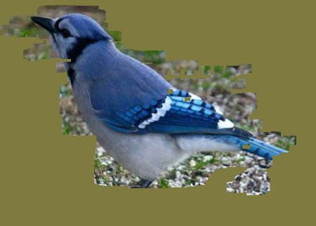

Solution for Programming Exercise 13.1
This page contains a sample solution to one of the exercises from Introduction to Programming Using Java.
Exercise 13.1:
The folder nature-images contains several pictures of animals. (In the web site download, you can find that folder in the chapter13 directory inside the source directory.) Write a "scratch off" program that could be used by a small child that works as follows: The program window starts by showing a large uniformly colored rectangle, with one of the animal pictures hidden behind it. As the user drags the mouse over the image, part of the colored overlay is scratched off, revealing the picture underneath. Here is what it should look like after part of the overlay has been removed:

You can implement this by using one canvas, containing the colored overlay, stacked on top of another canvas that contains the animal picture. (Stacked canvases were used in the sample program ToolPaint.java from Subsection 13.2.4.) To implement scratching off part of the overlay, just clear a small rect in the overlay canvas around the mouse location. The program should have some way to move on to the next picture. Another idea is to have several different sizes of scratchers, so that an impatient child can use a giant one that will remove large swatches of color.
The pictures have to be read into the program as objects of type Image. I store the pictures into an ArrayList<Image>, pictures. I shuffle them into a random order using the standard function Collections.shuffle(), so that the pictures will be used in a different order each time the program is run. An instance variable, nextPicIndex, is used to keep track of which picture is going to be shown next.
The basic stacked canvas idea is easy to implement. The two canvases are placed into a StackPane. An animal picture is drawn in the bottom canvas. The animal pictures are not all the same size, so I picked an arbitrary canvas size of 800-by-600 and stretched the pictures to fit the canvas, using a drawImage() method that includes the width and height of the rectangle into which the image is drawn. At the same time, I fill the overlay canvas with a random color:
overlayGraphics.setFill( Color.hsb(360*Math.random(), 0.5, 0.5) ); overlayGraphics.fillRect( 0,0, width,height ); picGraphics.drawImage( pictures.get(nextPicIndex), 0,0, width,height );
I added some controls at the bottom of the program window: a button that loads the next picture, a ComboBox for selecting the size of the "scratcher," and (for the really impatient), a button that will clear the entire overlay canvas.
import javafx.application.Application;
import javafx.stage.Stage;
import javafx.scene.Scene;
import javafx.scene.control.Button;
import javafx.scene.control.Label;
import javafx.scene.control.ComboBox;
import javafx.scene.layout.HBox;
import javafx.scene.layout.BorderPane;
import javafx.scene.layout.StackPane;
import javafx.scene.canvas.Canvas;
import javafx.scene.canvas.GraphicsContext;
import javafx.scene.paint.Color;
import javafx.scene.image.Image;
import javafx.scene.input.MouseEvent;
import javafx.geometry.Pos;
import javafx.geometry.Insets;
import java.util.ArrayList;
import java.util.Collections;
/**
* A program that lets the user "scratch off" a mask that is covering an
* image, by dragging the mouse. This program requires that some specific
* image files be available as resource files in a folder named "nature-images".
*/
public class ScratchOff extends Application {
public static void main(String[] args) {
launch();
}
//-------------------------------------------------------------------
private final static String[] picFileNames = {
// These are the names of the resource image files that contain
// the pictures used by this program. The must be in folder
// named nature-images.
"bluejay.jpg", "chipmunk.jpg", "collie.jpg", "elephants.jpg",
"faun.jpg", "lion.jpg", "polar-bear.jpg", "stork.jpg"
};
private Canvas picCanvas; // canvas where picture is drawn
private GraphicsContext picGraphics; // graphics context for picCanvas
private Canvas overlayCanvas; // canvas that hides the picture
private GraphicsContext overlayGraphics; // graphics context for overlayCanvas
private ArrayList<Image> pictures; // An arraylist containing the images
private int nextPicIndex; // The index of the array list of the next picture
// that will be drawn. To avoid repeating a picture
// until all of the pictures have been used,
// the array list is shuffled and the pictures are
// shown in the reverse order that they occur in the
// list. If all the pictures are used, the list is
// reshuffled and the pictures are reused.
private final int[] sizes = { 10, 20, 35, 60 }; // sizes for the square that
// is revealed when the user
// drags the mouse
private double scratcherSize; // current size of the rectangle; one of the
// items from the previous array, depeding on
// the current setting of a ComboBox
private final static int width = 800; // canvas size
private final static int height = 600;
/**
* Set up the GUI. The overlay canvas, which hides the picture is
* stacked on top of the canvas that displays the image. There are
* some buttons and a combo box at the bottom of the window.
*/
public void start(Stage stage) {
picCanvas = new Canvas(width,height);
picGraphics = picCanvas.getGraphicsContext2D();
overlayCanvas = new Canvas(width,height);
overlayGraphics = overlayCanvas.getGraphicsContext2D();
pictures = new ArrayList<Image>();
for (int i = 0; i < picFileNames.length; i++) {
pictures.add( new Image("nature-images/" + picFileNames[i]) );
}
Collections.shuffle(pictures); // put pictures in a random order
nextPicIndex = picFileNames.length - 1; // index for the first picture
newPic(); // Set up the first picture.
overlayCanvas.setOnMousePressed( this::scratch );
overlayCanvas.setOnMouseDragged( this::scratch );
StackPane canvasHolder = new StackPane(picCanvas,overlayCanvas);
canvasHolder.setStyle("-fx-border-color: #444; -fx-border-width:5px");
Button newPicBtn = new Button("New ScratchOff!");
newPicBtn.setOnAction( e -> newPic() );
Button showAllBtn = new Button("Show the Whole Picture!");
showAllBtn.setOnAction( e -> overlayGraphics.clearRect(0,0,width,height) );
ComboBox<String> sizeSelect = new ComboBox<>();
sizeSelect.getItems().addAll("Small", "Normal", "Big", "Giant");
sizeSelect.getSelectionModel().select(1);
scratcherSize = sizes[1];
sizeSelect.setOnAction(
e -> scratcherSize = sizes[ sizeSelect.getSelectionModel().getSelectedIndex() ] );
HBox bottom = new HBox(10,newPicBtn,showAllBtn, new Label(" Scratcher Size:"), sizeSelect);
bottom.setAlignment(Pos.CENTER);
bottom.setPadding( new Insets(10) );
BorderPane root = new BorderPane(canvasHolder);
root.setBottom(bottom);
stage.setScene( new Scene(root) );
stage.setResizable(false);
stage.setTitle("Scratc Off to Reveal a Picture!");
stage.show();
}
/**
* Show the next picture in the picCanvas, and fill the overlay canvas
* with a random dull color to hide the picture. Set up nextPicIndex
* for the next picture.
*/
private void newPic() {
overlayGraphics.setFill( Color.hsb(360*Math.random(), 0.5, 0.5) );
overlayGraphics.fillRect(0,0,width,height);
picGraphics.drawImage(pictures.get(nextPicIndex),0,0,width,height);
if (nextPicIndex == 0) {
Image item0 = pictures.get(0);
do { // Avoid having the item that is showing now be put
// at the end of the list where it will be shown next.
Collections.shuffle(pictures);
} while (pictures.get(pictures.size()-1) == item0);
nextPicIndex = pictures.size() - 1;
}
else {
nextPicIndex--;
}
}
/**
* When the user pressed or drags the mouse, clear a rect in the
* overlay canvas, with a size given by scratcherSize.
*/
private void scratch(MouseEvent evt) {
overlayGraphics.clearRect( evt.getX() - scratcherSize/2,
evt.getY() - scratcherSize/2, scratcherSize, scratcherSize );
}
} // end ScratchOff